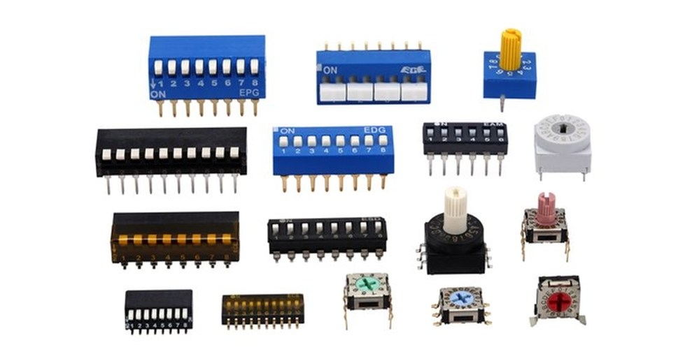
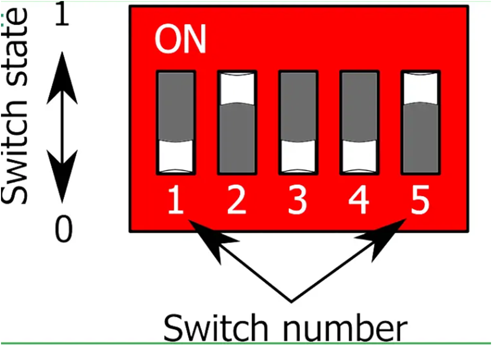
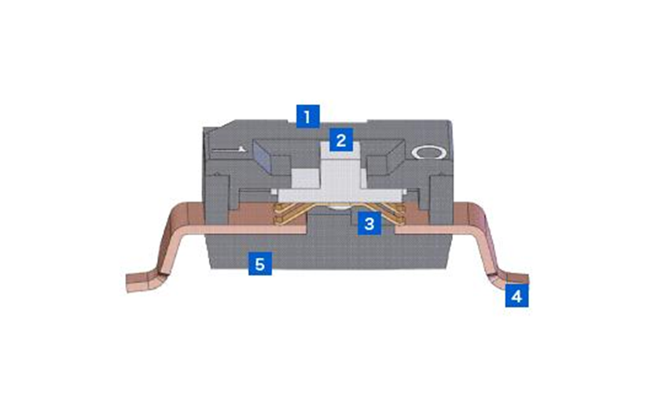
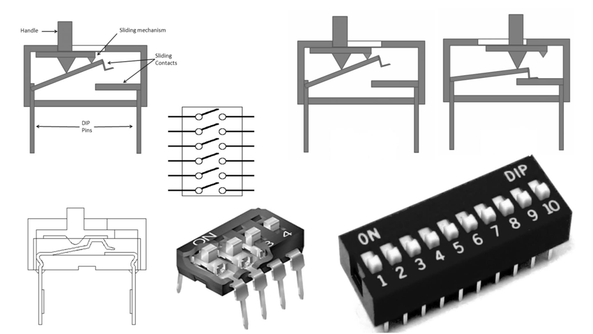

DIP Switch
A DIP switch is a manual electrical switch packaged in a dual in-line (DIP) format, designed to
be mounted directly on a printed circuit board (PCB).
It is used to set configurations, addresses, or operating modes in electronic circuits without
using software.
Each tiny switch represents a binary input:
- ON = 1
- OFF = 0

The structures of the DIP switch


The basic structure of a DIP switch consists of the following components:
- Cover : The cover is connected to the base to protect the internal mechanisms of the switch.
- Striker pin : Use an implement with a thin tip to set the striker to the ON or OFF position. Contact force is applied to the wiper to maintain stable contact between the wiper and the contact.
- Rocker contact : The contact is a V-shaped moving contact. The rocker contact moves along with the striker to either open or close the connection between the two contacts and turn the switch ON and OFF.
- Contact terminals : The contact terminal is built-in in the base. There are two types of terminals: terminals inserted into the socket on the PCB and terminals installed on the surface of the PCB.
- Base : The base is molded with contact terminal into a single unit. It protects the inside of the switch along with the cover.
Working of a DIP Switch
- Each individual switch is an SPST (Single Pole Single Throw) switch
- When the switch is:
- ON → circuit is closed → current flows → logic HIGH (1)
- OFF → circuit is open → no current → logic LOW (0)
- Multiple switches together allow binary combinations.
Example:
A 4-switch DIP can create:
- 24 = 16 different settings
Used for:
- Device addressing
- Mode selection
- Feature enabling/disabling
Types of DIP Switches
- Slide DIP Switch
- Small sliding actuators
- Most commonly used
- Reliable and compact

- Rocker DIP Switch
- Rocker-style movement
- Easier to operate
- Slightly larger

- Rotary DIP Switch
- Rotating knob instead of sliders
- Encodes values (0-9, 0-15)
- Takes less space for many options

- Piano DIP Switch
- Push-button style
- Flat top appearance
- Used in compact designs

DIP Switch Configurations
- SPST - most common
- Normally Open (NO)
- Normally Closed (NC)
Applications of DIP Switch
- Address Setting
- Network devices
- Industrial controllers
- Mode Selection
- Microcontroller systems
- Embedded electronics
- Hardware Configuration
- Enabling features
- Selecting baud rates
- Testing & Prototyping
- Lab equipment
- Development boards
- Consumer & Industrial Electronics
- Printers
- Control panels
- PLC modules